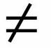

مقالههاى اين بخش
- 5 شهریور 1389

ناهید میرحاج
- 5 شهریور 1389
- 29 مرداد 1389
تقدیم به همه مبارزان راه آزادی و حقوق زنان و به خصوص خانم¬ها «بهاره هدایت» و «شیوا نظرآهاری»
- 27 مرداد 1389
لیلا راد
- 18 مرداد 1389
لیلا راد
- 4 مرداد 1389
لیلا راد
- 29 تیر 1389
- 26 تیر 1389
امیر یعقوبعلی
- 17 تیر 1389

تغییرات سن مسئولیت کیفری طی 85 سال
- 14 تیر 1389
- 3 تیر 1389
- 21 خرداد 1389
ترجمه : نیکزاد زنگنه
- 13 خرداد 1389
ناهید میرحاج
- 6 خرداد 1389
- 27 اردیبهشت 1389
- 16 اردیبهشت 1389
- 7 اردیبهشت 1389
- 27 فروردین 1389
بررسی عملکرد سه ساله «کمپین یک میلیون امضاء»
فروغ سمیعی نیا
- 21 فروردین 1389
مرضیه آریانفر
- 19 فروردین 1389
تهیه و تنظیم از رضوان مقدم
- 10 فروردین 1389

- 10 فروردین 1389
- 27 اسفند 1388
- 24 اسفند 1388
- 16 اسفند 1388
- 10 بهمن 1388
گزارش یک وکیل
- 1 بهمن 1388
- 8 دی 1388
- 30 آذر 1388
- 28 آذر 1388
سیما حسین زاده
| ... | | | | | 150 | | | | | ... |